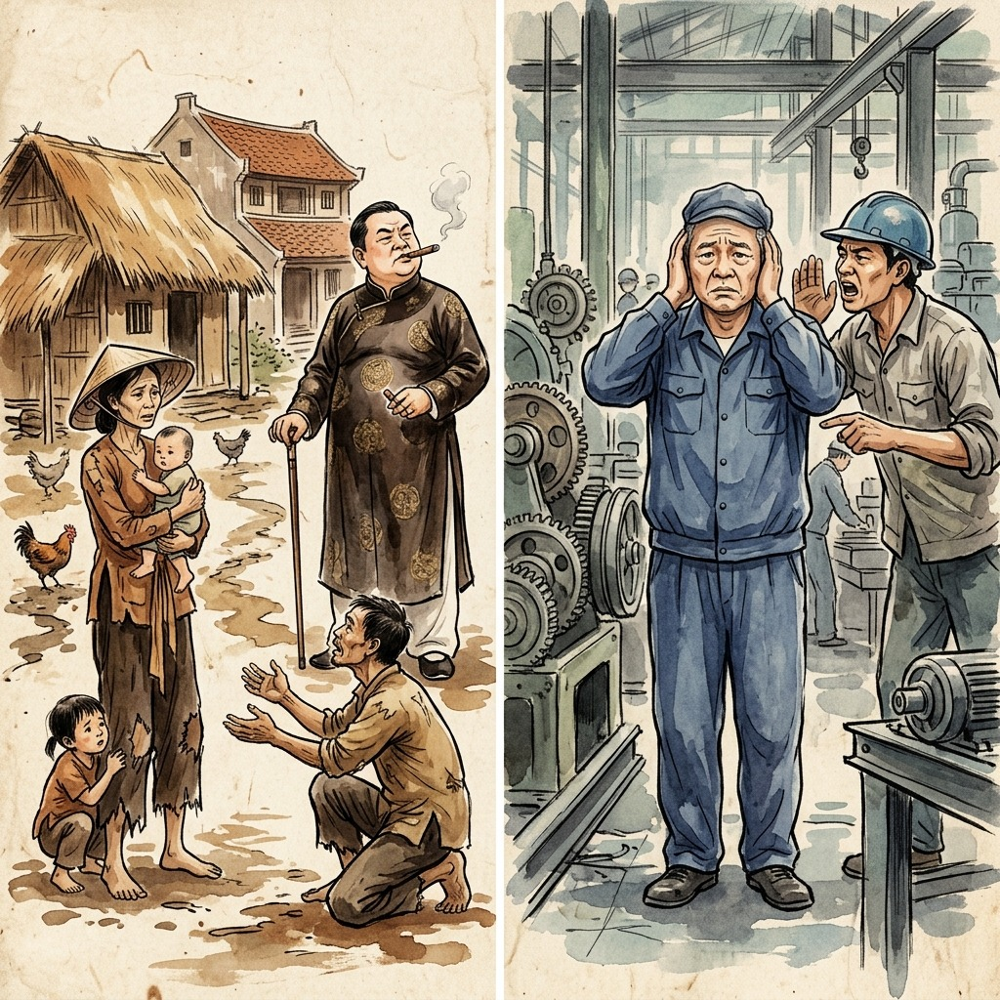
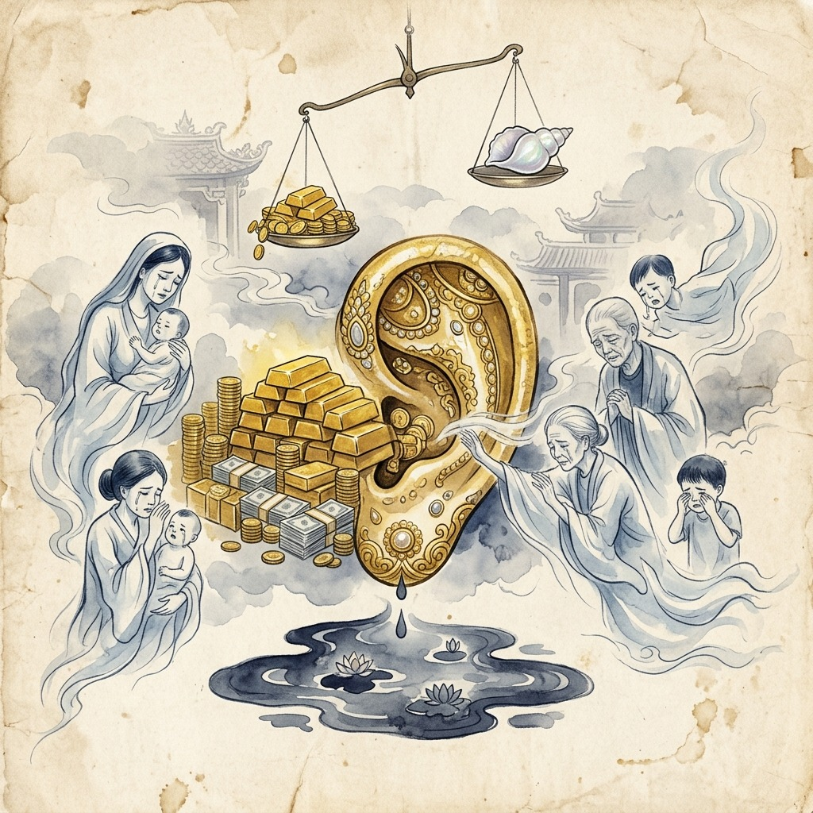
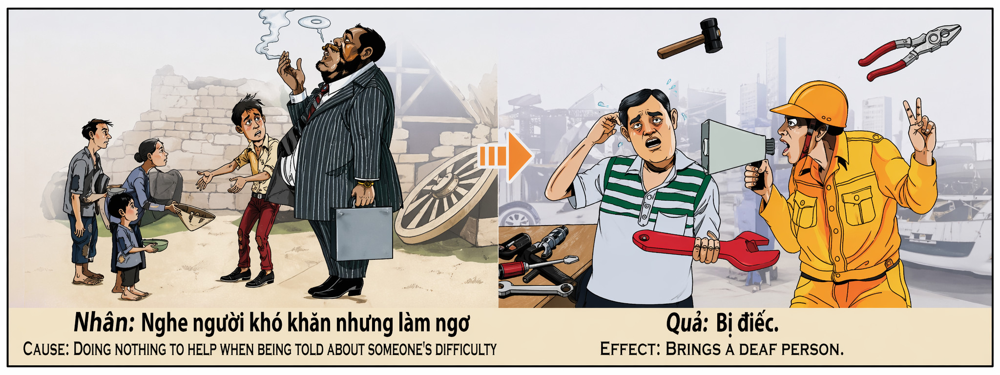

Los Oídos del Silencio The Ears of Silence Le Orecchie del Silenzio 沉默的耳朵 آذان الصمت Уши тишины Die Ohren der Stille Les Oreilles du Silence 沈黙の耳 Os Ouvidos do Silêncio Đôi Tai Của Sự Im Lặng
"Quien cierra sus oídos al llanto del prójimo, el universo le cerrará los oídos al sonido de la vida misma." "He who closes his ears to the cry of his neighbor, the universe will close his ears to the sound of life itself." "Chi chiude le orecchie al grido del suo prossimo, l'universo chiuderà le sue orecchie al suono della vita stessa." “如果谁对邻居的呼喊充耳不闻，宇宙也会对生命本身的声音充耳不闻。” "من أغلق أذنيه عن صراخ جاره، أغلق الكون أذنيه عن صوت الحياة نفسها." «Кто закроет уши для крика ближнего, вселенная закроет уши для звука самой жизни.». „Wer seine Ohren vor dem Schrei seines Nächsten verschließt, dem wird das Universum seine Ohren vor dem Klang des Lebens selbst verschließen.“ « Celui qui ferme ses oreilles au cri de son prochain, l'univers fermera ses oreilles au son de la vie elle-même. » 「隣人の叫びに耳を閉ざす者は、宇宙も生命そのものの音に耳を閉ざすでしょう。」 "Quem fecha os ouvidos ao grito do próximo, o universo fechará os ouvidos ao som da própria vida." "Ai bịt tai trước tiếng kêu của người hàng xóm, vũ trụ sẽ bịt tai trước âm thanh của chính cuộc sống."
El oído humano no es solo un órgano: es una puerta sagrada que conecta el alma de quien escucha con el alma de quien habla. Cuando alguien te cuenta su sufrimiento —la enfermedad de un hijo, el hambre que aprieta, la soledad que devora— y tú eliges conscientemente no escuchar, no es que ignores unas palabras: estás cerrando esa puerta sagrada con un portazo que resuena en la eternidad. El karma registra cada súplica desatendida, cada lágrima ignorada, cada grito de auxilio que rebotó contra el muro de tu indiferencia. Y la sentencia es de una justicia poética devastadora: quien eligió no escuchar el dolor ajeno, perderá la capacidad misma de escuchar.
La sordera kármica no es un castigo arbitrario: es un espejo exacto. Tus oídos se cierran porque tú los cerraste primero. El universo te devuelve en forma física lo que tú practicaste en forma espiritual. Cada vez que una madre te suplicó ayuda y tú miraste hacia otro lado fumando tu puro, cada vez que un anciano te pidió un momento de atención y tú aceleraste el paso, cada vez que un niño hambriento extendió la mano y tú la apartaste como si fuera basura, depositaste un ladrillo más en el muro que terminaría sellando tus propios canales auditivos. No es Dios quien te ensordece: eres tú mismo, eco a eco, silencio a silencio.
Lo más desgarrador de este karma es lo que revela sobre la naturaleza de la escucha. Escuchar no es un acto pasivo: es el acto más generoso que un ser humano puede realizar sin gastar un solo centavo. Cuando escuchas de verdad a alguien que sufre, le estás diciendo sin palabras: «Tu dolor existe, tu vida importa, no estás solo en este mundo». Y cuando te niegas a escuchar, le estás diciendo exactamente lo contrario: «Tu dolor no existe, tu vida no importa, estás completamente solo». El universo, que escucha todo —incluso lo que nosotros nos negamos a escuchar—, toma nota y ajusta la balanza: quien negó su oído al mundo, descubrirá un día que el mundo entero le habla pero él ya no puede oír ni una sola palabra.
The human ear is not just an organ: it is a sacred door that connects the soul of the listener with the soul of the speaker. When someone tells you about their suffering—the illness of a child, the hunger that presses, the loneliness that devours—and you consciously choose not to listen, it is not that you ignore a few words: you are closing that sacred door with a slam that echoes in eternity. Karma records every unattended plea, every ignored tear, every cry for help that bounced off the wall of your indifference. And the sentence is one of devastating poetic justice: whoever chose not to listen to the pain of others will lose the very ability to listen.
Karmic deafness is not an arbitrary punishment: it is an exact mirror. Your ears close because you closed them first. The universe returns to you in physical form what you practiced in spiritual form. Every time a mother begged you for help and you looked away smoking your cigar, every time an old man asked for a moment of your attention and you quickened your pace, every time a hungry child reached out his hand and you shoved it away like it was trash, you placed one more brick in the wall that would end up sealing your own ear canals. It is not God who deafens you: it is yourself, echo by echo, silence by silence.
The most heartbreaking thing about this karma is what it reveals about the nature of listening. Listening is not a passive act: it is the most generous act that a human being can perform without spending a single cent. When you truly listen to someone who is suffering, you are telling them without words: “Your pain exists, your life matters, you are not alone in this world.” And when you refuse to listen, you are telling him exactly the opposite: "Your pain does not exist, your life does not matter, you are completely alone." The universe, which listens to everything—even what we refuse to hear—takes note and adjusts the balance: he who denied his ear to the world will one day discover that the entire world speaks to him but he can no longer hear a single word.
L'orecchio umano non è solo un organo: è una porta sacra che collega l'anima di chi ascolta con l'anima di chi parla. Quando qualcuno ti racconta la sua sofferenza – la malattia di un bambino, la fame che incalza, la solitudine che divora – e tu scegli consapevolmente di non ascoltarlo, non è che ignori qualche parola: stai chiudendo quella porta sacra con uno sbattimento che risuona nell’eternità. Il karma registra ogni richiesta inascoltata, ogni lacrima ignorata, ogni grido di aiuto che rimbalza sul muro della tua indifferenza. E la frase è di devastante giustizia poetica: chi ha scelto di non ascoltare il dolore degli altri perderà la capacità stessa di ascoltare.
La sordità karmica non è una punizione arbitraria: è uno specchio esatto. Le tue orecchie si chiudono perché le hai chiuse per primo. L'universo ti restituisce in forma fisica ciò che hai praticato in forma spirituale. Ogni volta che una madre ti chiedeva aiuto e tu distoglievi lo sguardo fumando il tuo sigaro, ogni volta che un vecchio chiedeva un attimo della tua attenzione e tu acceleravi il passo, ogni volta che un bambino affamato allungava la mano e tu la spingevi via come se fosse spazzatura, mettevi un mattone in più nel muro che avrebbe finito per sigillare i tuoi canali uditivi. Non è Dio che ti assorda: sei tu, eco dopo eco, silenzio dopo silenzio.
La cosa più straziante di questo karma è ciò che rivela sulla natura dell’ascolto. Ascoltare non è un atto passivo: è l'atto più generoso che un essere umano possa compiere senza spendere un solo centesimo. Quando ascolti veramente qualcuno che soffre, gli stai dicendo senza parole: “Il tuo dolore esiste, la tua vita conta, non sei solo in questo mondo”. E quando ti rifiuti di ascoltarlo, gli stai dicendo esattamente il contrario: "Il tuo dolore non esiste, la tua vita non ha importanza, sei completamente solo". L’universo, che ascolta tutto – anche ciò che noi rifiutiamo di sentire – prende atto e aggiusta l’equilibrio: chi ha negato il suo orecchio al mondo scoprirà un giorno che il mondo intero gli parla ma non riesce più a sentire una sola parola.
人耳不仅仅是一个器官：它是连接听者灵魂与说话者灵魂的神圣之门。当有人告诉你他们的痛苦——孩子的病、紧迫的饥饿、吞噬的孤独——而你有意识地选择不听时，这并不是说你忽略了几句话：你正在用一声在永恒中回响的砰的一声关上那扇神圣的门。业力记录了每一次无人理会的恳求，每一次被忽视的眼泪，每一次从你冷漠的墙上反弹的呼救声。这句话充满了毁灭性的诗意正义：任何选择不倾听他人痛苦的人都将失去倾听的能力。
业力耳聋不是任意的惩罚：它是一面精确的镜子。你的耳朵关闭是因为你先关闭了它们。宇宙以物质形式将你以精神形式实践的东西返回给你。每当一位母亲向你求助，而你抽着雪茄把目光移开时；每当一位老人请求你注意时，你加快了脚步；每次当一个饥饿的孩子伸出手，而你像扔垃圾一样把它推开时，你就在墙上又放了一块砖头，而这块砖头最终会堵住你自己的耳道。使你震耳欲聋的不是上帝：而是你自己，回声接着回声，沉默接着沉默。
这种业力最令人心碎的是它揭示了倾听的本质。倾听不是一种被动的行为：它是一个人不花一分钱就能做出的最慷慨的行为。当你真正倾听正在遭受痛苦的人的倾诉时，你就是在无声地告诉他们：“你的痛苦存在，你的生命很重要，你在这个世界上并不孤单。”当你拒绝倾听时，你就是在告诉他恰恰相反：“你的痛苦不存在，你的生活并不重要，你完全孤独。”宇宙倾听着一切——甚至是我们拒绝听到的——记录下来并调整平衡：那些拒绝倾听世界的人有一天会发现整个世界都在对他说话，但他再也听不到任何一个字。
الأذن البشرية ليست مجرد عضو: إنها باب مقدس يربط روح المستمع بروح المتكلم. عندما يخبرك شخص ما عن معاناته – مرض طفل، الجوع الذي يضغط، الوحدة التي تلتهم – وتختار بوعي عدم الاستماع، فهذا لا يعني أنك تتجاهل بضع كلمات: أنت تغلق هذا الباب المقدس بصفقة يتردد صداها في الأبدية. تسجل الكارما كل نداء لم يتم الاهتمام به، وكل دمعة تم تجاهلها، وكل صرخة طلبًا للمساعدة ارتدت من جدار لامبالاتك. والجملة هي عبارة عن عدالة شعرية مدمرة: من اختار عدم الاستماع إلى آلام الآخرين سيفقد القدرة على الاستماع.
إن الصمم الكرمي ليس عقوبة تعسفية: بل هو مرآة دقيقة. أذناك تغلقان لأنك أغلقتهما أولا. يعيد لك الكون في شكل مادي ما مارسته في شكل روحي. في كل مرة تتوسل إليك أمك طلبًا للمساعدة وتنظر بعيدًا وأنت تدخن سيجارك، في كل مرة يطلب منك رجل عجوز لحظة من اهتمامك فتسرع وتيرتك، في كل مرة يمد فيها طفل جائع يده وتدفعها بعيدًا كما لو كانت قمامة، تضع حجرًا آخر في الحائط سيؤدي في النهاية إلى سد قنوات أذنك. ليس الله هو الذي يصمك: بل أنت نفسك، صدىً بعد صدى، وصمتًا بعد صمت.
إن أكثر ما يحزن القلب في هذه الكارما هو ما تكشفه عن طبيعة الاستماع. إن الاستماع ليس فعلًا سلبيًا: إنه العمل الأكثر سخاءً الذي يمكن أن يقوم به الإنسان دون أن ينفق سنتًا واحدًا. عندما تستمع حقًا إلى شخص يعاني، فإنك تقول له بدون كلمات: "ألمك موجود، وحياتك مهمة، أنت لست وحدك في هذا العالم". وعندما ترفض الاستماع، فأنت تقول له العكس تمامًا: "ألمك غير موجود، وحياتك لا تهم، أنت وحيد تمامًا". إن الكون الذي يستمع إلى كل شيء، حتى ما نرفض سماعه، يحيط علما ويعدل الميزان: من حرم أذنه من العالم سيكتشف يوما ما أن العالم كله يتحدث إليه، لكنه لم يعد يسمع كلمة واحدة.
Человеческое ухо – это не просто орган: это священная дверь, соединяющая душу слушателя с душой говорящего. Когда кто-то рассказывает вам о своих страданиях – болезни ребенка, давящем голоде, пожирающем одиночестве – и вы сознательно решаете не слушать, это не значит, что вы игнорируете несколько слов: вы закрываете эту священную дверь с грохотом, который отзывается эхом в вечности. Карма записывает каждую оставленную без внимания мольбу, каждую проигнорированную слезу, каждый крик о помощи, отскакивающий от стены вашего безразличия. И приговор представляет собой разрушительную поэтическую справедливость: тот, кто решил не слушать чужую боль, потеряет саму способность слушать.
Кармическая глухота – это не произвольное наказание: это точное зеркало. Ваши уши закрываются, потому что вы закрыли их первым. Вселенная возвращает вам в физической форме то, что вы практиковали в духовной форме. Каждый раз, когда мать умоляла вас о помощи, а вы отводили взгляд, куря сигару, каждый раз, когда старик просил минутку вашего внимания, и вы ускоряли шаг, каждый раз, когда голодный ребенок протягивал руку, и вы отбрасывали ее, как мусор, вы клали еще один кирпич в стену, который в конечном итоге затыкал ваши собственные слуховые проходы. Не Бог оглушает тебя: это ты сам, эхо за эхом, молчание за молчанием.
Самое душераздирающее в этой карме то, что она раскрывает природу слушания. Слушание – это не пассивное действие: это самый щедрый поступок, который человек может совершить, не потратив ни копейки. Когда вы по-настоящему слушаете кого-то, кто страдает, вы без слов говорите ему: «Твоя боль существует, твоя жизнь имеет значение, ты не одинок в этом мире». А когда вы отказываетесь слушать, вы говорите ему с точностью до наоборот: «Твоей боли не существует, твоя жизнь не имеет значения, ты совсем один». Вселенная, которая слушает все — даже то, что мы отказываемся слышать, — принимает это к сведению и корректирует баланс: тот, кто отказался слышать мир, однажды обнаружит, что весь мир говорит с ним, но он больше не может услышать ни единого слова.
Das menschliche Ohr ist nicht nur ein Organ: Es ist eine heilige Tür, die die Seele des Zuhörers mit der Seele des Sprechers verbindet. Wenn Ihnen jemand von seinem Leiden erzählt – der Krankheit eines Kindes, dem Hunger, der Sie bedrängt, der Einsamkeit, die verschlingt – und Sie sich bewusst dafür entscheiden, nicht zuzuhören, bedeutet das nicht, dass Sie ein paar Worte ignorieren: Sie schließen diese heilige Tür mit einem Knall, der in der Ewigkeit widerhallt. Karma zeichnet jedes unbeachtete Flehen, jede ignorierte Träne, jeden Hilferuf auf, der von der Wand Ihrer Gleichgültigkeit abprallt. Und der Satz ist von vernichtender poetischer Gerechtigkeit: Wer sich dafür entscheidet, nicht auf den Schmerz anderer zu hören, wird die Fähigkeit verlieren, zuzuhören.
Karmische Taubheit ist keine willkürliche Strafe, sondern ein exakter Spiegel. Deine Ohren schließen sich, weil du sie zuerst geschlossen hast. Das Universum gibt Ihnen in physischer Form zurück, was Sie in spiritueller Form praktiziert haben. Jedes Mal, wenn eine Mutter Sie um Hilfe anflehte und Sie wegschauten und Ihre Zigarre rauchten, jedes Mal, wenn ein alter Mann um einen Moment Ihrer Aufmerksamkeit bat und Sie Ihren Schritt beschleunigten, jedes Mal, wenn ein hungriges Kind seine Hand ausstreckte und Sie sie wegschob, als wäre es Müll, haben Sie einen weiteren Ziegelstein in die Wand gelegt, der am Ende Ihre eigenen Gehörgänge verschließen würde. Es ist nicht Gott, der dich taub macht: Es bist du selbst, Echo für Echo, Stille für Stille.
Das Herzzerreißendste an diesem Karma ist, was es über die Natur des Zuhörens verrät. Zuhören ist kein passiver Akt: Es ist der großzügigste Akt, den ein Mensch leisten kann, ohne einen einzigen Cent auszugeben. Wenn Sie jemandem, der leidet, wirklich zuhören, sagen Sie ihm ohne Worte: „Dein Schmerz existiert, dein Leben ist wichtig, du bist nicht allein auf dieser Welt.“ Und wenn Sie sich weigern, ihm zuzuhören, sagen Sie ihm genau das Gegenteil: „Dein Schmerz existiert nicht, dein Leben ist egal, du bist völlig allein.“ Das Universum, das auf alles hört – auch auf das, was wir nicht hören wollen – nimmt es zur Kenntnis und stellt das Gleichgewicht wieder her: Wer der Welt sein Ohr versagt hat, wird eines Tages entdecken, dass die ganze Welt zu ihm spricht, er aber kein einziges Wort mehr hören kann.
L'oreille humaine n'est pas qu'un organe : c'est une porte sacrée qui relie l'âme de celui qui l'écoute à celle de celui qui parle. Quand quelqu’un vous raconte sa souffrance – la maladie d’un enfant, la faim qui presse, la solitude qui dévore – et que vous choisissez consciemment de ne pas écouter, ce n’est pas que vous ignorez quelques mots : vous fermez cette porte sacrée avec un claquement qui résonne dans l’éternité. Le karma enregistre chaque appel laissé sans réponse, chaque larme ignorée, chaque appel à l'aide qui rebondit sur le mur de votre indifférence. Et la sentence est d’une justice poétique dévastatrice : celui qui choisit de ne pas écouter la douleur des autres perdra la capacité même d’écouter.
La surdité karmique n’est pas une punition arbitraire : c’est un miroir exact. Vos oreilles se ferment parce que vous les avez fermées en premier. L’univers vous rend sous forme physique ce que vous avez pratiqué sous forme spirituelle. Chaque fois qu'une mère vous demandait de l'aide et que vous détourniez le regard en fumant votre cigare, chaque fois qu'un vieil homme demandait un moment de votre attention et que vous accélériez le pas, chaque fois qu'un enfant affamé vous tendait la main et que vous la poussiez comme si c'était une poubelle, vous placiez une brique supplémentaire dans le mur qui finirait par boucher vos propres conduits auditifs. Ce n'est pas Dieu qui vous assourdit : c'est vous-même, écho après écho, silence après silence.
La chose la plus déchirante dans ce karma est ce qu’il révèle sur la nature de l’écoute. L'écoute n'est pas un acte passif : c'est l'acte le plus généreux qu'un être humain puisse accomplir sans dépenser un seul centime. Lorsque vous écoutez vraiment quelqu’un qui souffre, vous lui dites sans paroles : « Votre douleur existe, votre vie compte, vous n’êtes pas seul au monde. » Et lorsque vous refusez de l'écouter, vous lui dites exactement le contraire : "Ta douleur n'existe pas, ta vie n'a pas d'importance, tu es complètement seul." L'univers, qui écoute tout, même ce que nous refusons d'entendre, prend acte et règle la balance : celui qui a refusé l'oreille au monde découvrira un jour que le monde entier lui parle mais qu'il n'entend plus une seule parole.
人間の耳は単なる器官ではなく、聞き手の魂と話し手の魂を繋ぐ神聖な扉です。誰かが子供の病気、迫りくる飢え、襲いかかる孤独などの苦しみについてあなたに語るとき、あなたが意識的に聞かないことを選んだとき、それはあなたがいくつかの言葉を無視しているわけではありません。あなたはその神聖な扉を永遠に響くバタンという音で閉めているのです。カルマは、無視されたすべての嘆願、無視された涙、無関心の壁に跳ね返された助けを求めるすべての叫びを記録します。そしてその判決は、詩的正義を打ち破るものの一つである。他人の痛みに耳を傾けないことを選択した者は、耳を傾ける能力そのものを失うことになる。
カルマ的難聴は恣意的な罰ではありません。それはまさに鏡です。耳が閉じるのは、あなたが先に耳を閉じたからです。あなたが霊的な形で実践したものを、宇宙は物理的な形であなたに返します。母親が助けを求めてあなたが葉巻を吸いながら目を逸らすたび、老人があなたの注意を求めてペースを速めるたび、お腹を空かせた子供が手を伸ばしてきてそれをゴミのように押しのけるたび、あなたは壁にもう一つレンガを置き、最終的には自分自身の外耳道を塞いでしまうことになる。あなたを耳をつんざくのは神ではありません。こだまにこだまし、沈黙に沈黙を重ねるのはあなた自身です。
このカルマで最も悲痛な点は、聞くことの性質についてそれが明らかにしていることです。聞くことは受動的な行為ではありません。それは人間が一円も費やすことなく実行できる最も寛大な行為です。苦しんでいる人の話を真剣に聞くとき、あなたは言葉を使わずに、「あなたの痛みは存在する、あなたの人生は重要だ、あなたはこの世界で一人ではない」と伝えていることになります。そして、あなたが聞くことを拒否するとき、あなたは彼にまったく逆のことを言っているのです：「あなたの痛みは存在しない、あなたの人生は重要ではない、あなたは完全に孤独です。」宇宙はあらゆるものに耳を傾けます。私たちが聞くことを拒否しているものであっても、注意を払ってバランスを調整します。世界に耳を傾けなかった人は、ある日、全世界が自分に話しかけているのに、もはや一言も聞き取ることができないことに気づくでしょう。
O ouvido humano não é apenas um órgão: é uma porta sagrada que conecta a alma de quem ouve com a alma de quem fala. Quando alguém lhe conta sobre o seu sofrimento – a doença de um filho, a fome que oprime, a solidão que devora – e você escolhe conscientemente não ouvir, não é que você ignore algumas palavras: você está fechando aquela porta sagrada com uma batida que ecoa na eternidade. O Karma registra cada pedido não atendido, cada lágrima ignorada, cada pedido de ajuda que ricocheteou na parede da sua indiferença. E a frase é de uma justiça poética devastadora: quem optar por não ouvir a dor dos outros perderá a própria capacidade de ouvir.
A surdez cármica não é um castigo arbitrário: é um espelho exato. Seus ouvidos se fecham porque você os fechou primeiro. O universo devolve para você na forma física o que você praticou na forma espiritual. Cada vez que uma mãe te implorava por ajuda e você desviava o olhar fumando seu charuto, cada vez que um velho pedia um momento de sua atenção e você acelerava o passo, cada vez que uma criança faminta estendia a mão e você a empurrava como se fosse lixo, você colocava mais um tijolo na parede que acabaria selando seus próprios canais auditivos. Não é Deus quem te ensurdece: é você mesmo, eco por eco, silêncio por silêncio.
O que há de mais doloroso nesse carma é o que ele revela sobre a natureza da escuta. Ouvir não é um ato passivo: é o ato mais generoso que um ser humano pode realizar sem gastar um único centavo. Quando você realmente ouve alguém que está sofrendo, você está dizendo sem palavras: “Sua dor existe, sua vida é importante, você não está sozinho neste mundo”. E quando você se recusa a ouvir, você está dizendo exatamente o contrário: “Sua dor não existe, sua vida não importa, você está completamente sozinho”. O universo, que tudo ouve – mesmo aquilo que nos recusamos a ouvir – toma nota e ajusta o equilíbrio: quem negou o seu ouvido ao mundo descobrirá um dia que o mundo inteiro lhe fala, mas ele já não consegue ouvir uma única palavra.
Tai con người không chỉ là một cơ quan: nó là cánh cửa thiêng liêng kết nối tâm hồn người nghe với tâm hồn người nói. Khi ai đó kể cho bạn nghe về nỗi đau khổ của họ – căn bệnh của một đứa trẻ, cơn đói đang đè nặng, sự cô đơn gặm nhấm – và bạn cố tình chọn không nghe, không phải là bạn phớt lờ một vài lời: bạn đang đóng cánh cửa thiêng liêng đó lại bằng một tiếng đóng sầm vang vọng trong cõi vĩnh hằng. Karma ghi lại từng lời cầu xin không được chăm sóc, từng giọt nước mắt bị phớt lờ, từng tiếng kêu cứu bật ra khỏi bức tường thờ ơ của bạn. Và câu nói đó là một câu công lý mang tính thi ca tàn khốc: ai chọn không lắng nghe nỗi đau của người khác sẽ mất đi chính khả năng lắng nghe.
Điếc do nghiệp báo không phải là một hình phạt tùy tiện: nó là một tấm gương phản chiếu chính xác. Tai bạn khép lại vì bạn đã đóng chúng trước. Vũ trụ trả lại cho bạn ở dạng vật chất những gì bạn đã thực hành ở dạng tâm linh. Mỗi khi một người mẹ cầu xin bạn giúp đỡ và bạn ngoảnh mặt đi hút xì gà, mỗi khi một ông già yêu cầu bạn chú ý một chút và bạn bước nhanh hơn, mỗi khi một đứa trẻ đói đưa tay ra và bạn gạt nó đi như thể đó là rác, bạn lại đặt thêm một viên gạch vào tường và cuối cùng sẽ bịt kín ống tai của chính bạn. Không phải Thiên Chúa làm bạn điếc tai: chính bạn, từng tiếng vang, từng thinh lặng nối tiếp thinh lặng.
Điều đau lòng nhất về nghiệp này là những gì nó bộc lộ về bản chất của việc lắng nghe. Lắng nghe không phải là một hành động thụ động: đó là hành động hào phóng nhất mà con người có thể thực hiện mà không tốn một xu. Khi bạn thực sự lắng nghe ai đó đang đau khổ, bạn đang nói với họ mà không cần lời nói: “Nỗi đau của bạn tồn tại, cuộc sống của bạn rất quan trọng, bạn không đơn độc trên thế giới này”. Và khi bạn từ chối lắng nghe, bạn đang nói với anh ấy điều ngược lại: "Nỗi đau của anh không tồn tại, cuộc sống của anh không quan trọng, anh hoàn toàn cô đơn." Vũ trụ, lắng nghe mọi thứ - ngay cả những gì chúng ta từ chối nghe - sẽ lưu ý và điều chỉnh sự cân bằng: một ngày nào đó, người từ chối tai mình với thế giới sẽ phát hiện ra rằng cả thế giới đang nói chuyện với anh ta nhưng anh ta không còn nghe được một lời nào nữa.
El Hombre Que No Quiso Oír
The Man Who Didn't Want to Hear
L'uomo che non voleva sentire
不想听的人
الرجل الذي لا يريد أن يسمع
Человек, который не хотел слышать
Der Mann, der nicht hören wollte
L'homme qui ne voulait pas entendre
聞きたくなかった男
O homem que não queria ouvir
Người đàn ông không muốn nghe
En la ciudad de Huế vivía un terrateniente llamado Đức, dueño de la mitad de los arrozales del distrito. Su casa tenía tres pisos, techo de teca y un jardín donde florecían orquídeas importadas de Tailandia. Cada mañana, al salir en su coche hacia sus tierras, pasaba junto a la misma escena: una viuda llamada Mai, con tres hijos pequeños, sentada al borde del camino vendiendo mangos que apenas alcanzaban para sobrevivir. Mai intentaba hablarle cada vez que lo veía: «Señor Đức, mi hijo menor tiene fiebre desde hace semanas, no puedo pagar al médico, ¿podría ayudarnos?». Pero Đức subía la ventanilla del coche sin detenerse y encendía la radio para no oír su voz.
Un día, la hija mayor de Mai —una niña de once años llamada Liên— se plantó en medio del camino con los brazos abiertos, obligando al coche a detenerse. Đức bajó la ventanilla furioso. «¡Apártate, mocosa!», gritó. Liên, con los ojos ardiendo de una dignidad que sobrepasaba sus años, le dijo con voz clara: «Señor, mi hermanito se muere. No le pido dinero. Solo le pido que escuche a mi madre durante un minuto. Solo un minuto. Si después de escucharla no quiere ayudar, no volveremos a molestarle nunca más». Đức miró a la niña, miró el reloj de oro en su muñeca, y arrancó el coche salpicando barro sobre el vestido remendado de Liên. «No tengo tiempo para mendigos», murmuró mientras aceleraba.
El niño murió tres días después. Mai enterró a su hijo pequeño en una tumba sin lápida, porque no tenía dinero ni para la piedra. Đức no se enteró, o tal vez sí se enteró y eligió no enterarse, que es peor. Los años pasaron y Đức envejeció próspero y poderoso. Pero una mañana se despertó y el mundo estaba en silencio. Un silencio absoluto, total, como si alguien hubiera arrancado los hilos invisibles que conectaban sus oídos con la vida. Los médicos confirmaron lo inexplicable: sordera súbita bilateral, sin causa orgánica conocida. Đức gastó fortunas en especialistas, en audífonos, en tratamientos experimentales. Nada funcionó. Sus oídos estaban perfectos por dentro, pero algo más profundo que la anatomía se había cerrado para siempre.
Una tarde, sentado en su jardín de orquídeas en un silencio que ya no era paz sino cárcel, vio entrar por la puerta a una mujer joven que llevaba flores. Era Liên, la niña del camino, ahora convertida en enfermera. Venía a cuidarlo porque nadie más quería hacerlo. Đức intentó hablarle, pero ella no respondía con palabras: escribía en una libreta. «¿Por qué no me habla?», escribió Đức desesperado. Liên tomó el lápiz y escribió despacio: «Porque quiero que usted sepa lo que se siente cuando alguien no te escucha. Mi hermano murió llamándole a usted por su nombre, porque mi madre le había dicho que usted era un hombre bueno que algún día nos ayudaría. Murió creyendo que usted vendría». Đức leyó aquellas palabras y un gemido animal salió de su garganta, el último sonido que escuchó con claridad antes de que el silencio lo devorara completamente. Comprendió que no había perdido la audición: había perdido el derecho a escuchar, porque cuando tuvo oídos, eligió usarlos solo para lo que le convenía.
In the city of Huế lived a landowner named Đức, who owned half of the rice fields in the district. His house had three floors, a teak roof and a garden where orchids imported from Thailand flourished. Every morning, as he left in his car for his land, he passed by the same scene: a widow named Mai, with three small children, sitting on the side of the road selling mangoes that were barely enough to survive. Mai tried to talk to him every time she saw him: "Mr. Đức, my youngest son has had a fever for weeks, I can't pay the doctor, could you help us?" But Đức would roll up the car window without stopping and turn on the radio so as not to hear her voice.
One day, Mai's eldest daughter—an eleven-year-old girl named Liên—stood in the middle of the road with her arms open, forcing the car to stop. Đức rolled down the window angrily. "Get away, brat!" he shouted. Liên, with her eyes burning with a dignity that surpassed her years, told him in a clear voice: «Sir, my little brother is dying. I don't ask you for money. I just ask that you listen to my mother for a minute. Just a minute. If after listening to it you do not want to help, we will never bother you again. Đức looked at the girl, looked at the gold watch on her wrist, and started the car, splashing mud on Liên's patched dress. "I don't have time for beggars," he muttered as he accelerated.
The child died three days later. Mai buried her little son in a grave without a tombstone, because she had no money even for the stone. Đức didn't find out, or maybe he did find out and chose not to find out, which is worse. The years passed and Đức grew old prosperous and powerful. But one morning he woke up and the world was silent. An absolute, total silence, as if someone had ripped out the invisible threads that connected his ears to life. The doctors confirmed the inexplicable: sudden bilateral deafness, with no known organic cause. Đức spent fortunes on specialists, on hearing aids, on experimental treatments. Nothing worked. His ears were perfect inside, but something deeper than the anatomy had closed forever.
One afternoon, sitting in his orchid garden in a silence that was no longer peace but prison, he saw a young woman entering through the door carrying flowers. It was Liên, the girl from the road, now turned into a nurse. I came to take care of him because no one else wanted to. Đức tried to speak to her, but she did not respond with words: she wrote in a notebook. "Why don't you talk to me?" Đức wrote desperately. Liên took the pencil and wrote slowly: “Because I want you to know what it feels like when someone doesn't listen to you. My brother died calling you by name, because my mother had told him that you were a good man who would help us one day. "He died believing that you would come." Đức read those words and an animalistic moan came from his throat, the last sound he heard clearly before the silence devoured him completely. He understood that he had not lost his hearing: he had lost the right to hear, because when he had ears, he chose to use them only for what was convenient for him.
Nella città di Huế viveva un proprietario terriero di nome Đức, che possedeva metà delle risaie del distretto. La sua casa aveva tre piani, un tetto in tek e un giardino dove fiorivano orchidee importate dalla Thailandia. Ogni mattina, mentre partiva in macchina per la sua terra, passava davanti alla stessa scena: una vedova di nome Mai, con tre bambini piccoli, seduta sul ciglio della strada a vendere manghi che bastavano a malapena per sopravvivere. Mai cercava di parlargli ogni volta che lo vedeva: "Signor Đức, il mio figlio più piccolo ha la febbre da settimane, non posso pagare il medico, potrebbe aiutarci?" Ma Đức alzava il finestrino della macchina senza fermarsi e accendeva la radio per non sentire la sua voce.
Un giorno, la figlia maggiore di Mai, una ragazzina di undici anni di nome Liên, rimase in mezzo alla strada con le braccia aperte, costringendo l'auto a fermarsi. Đức abbassò con rabbia il finestrino. "Vai via, moccioso!" gridò. Liên, con gli occhi ardenti di una dignità che superava la sua età, gli disse con voce chiara: «Signore, il mio fratellino sta morendo. Non ti chiedo soldi. Ti chiedo solo di ascoltare mia madre per un minuto. Solo un minuto. Se dopo averlo ascoltato non vuoi aiutarci, non ti disturberemo mai più. Đức guardò la ragazza, guardò l'orologio d'oro al suo polso e mise in moto la macchina, schizzando fango sul vestito rattoppato di Liên. "Non ho tempo per i mendicanti," mormorò mentre accelerava.
Il bambino morì tre giorni dopo. Mai seppellì il suo figlioletto in una tomba senza lapide, perché non aveva soldi nemmeno per la pietra. Đức non l'ha scoperto, o forse l'ha scoperto e ha scelto di non scoprirlo, il che è peggio. Gli anni passarono e Đức invecchiò prospero e potente. Ma una mattina si svegliò e il mondo tacque. Un silenzio assoluto, totale, come se qualcuno gli avesse strappato i fili invisibili che collegavano le sue orecchie alla vita. I medici confermarono l'inspiegabile: improvvisa sordità bilaterale, senza causa organica nota. Đức ha speso fortune in specialisti, in apparecchi acustici, in cure sperimentali. Niente ha funzionato. Le sue orecchie erano perfette all'interno, ma qualcosa di più profondo dell'anatomia si era chiuso per sempre.
Un pomeriggio, seduto nel suo giardino di orchidee in un silenzio che non era più pace ma prigione, vide una giovane donna entrare dalla porta portando dei fiori. Era Liên, la ragazza della strada, ora trasformata in infermiera. Sono venuto a prendermi cura di lui perché nessun altro voleva farlo. Đức ha provato a parlarle, ma lei non ha risposto con le parole: ha scritto su un quaderno. "Perché non mi parli?" Đức ha scritto disperatamente. Liên prese la matita e scrisse lentamente: "Perché voglio che tu sappia cosa si prova quando qualcuno non ti ascolta. Mio fratello è morto chiamandoti per nome, perché mia madre gli aveva detto che eri un brav'uomo che un giorno ci avrebbe aiutato. "È morto credendo che saresti venuto." Đức lesse quelle parole e dalla sua gola uscì un gemito animalesco, l'ultimo suono che sentì chiaramente prima che il silenzio lo divorasse completamente. Capì che non aveva perso l'udito: aveva perse il diritto di udire, perché quando ebbe le orecchie, scelse di usarle solo per ciò che gli conveniva.
顺化市住着一位名叫 Đức 的地主，他拥有该地区一半的稻田。他的房子共有三层，有柚木屋顶和一个花园，花园里种满了从泰国进口的兰花。每天早上，当他开车前往自己的土地时，都会经过同样的场景：一位名叫麦的寡妇带着三个年幼的孩子，坐在路边卖芒果，勉强维持生计。每次看到他，Mai 都试图和他说话：“D 先生，我最小的儿子已经发烧好几个星期了，我付不起医生的钱，你能帮助我们吗？”但德克会不停地摇起车窗并打开收音机，以免听到她的声音。
有一天，麦的大女儿——一个十一岁的女孩，名叫连——张开双臂站在路中央，迫使汽车停下来。德克愤怒地摇下车窗。 “滚开，臭小子！”他喊道。连眸中燃烧着超越年龄的尊严，清晰地告诉他：“先生，我的弟弟快要死了。我不向你要钱。我只是请你听我妈妈说一分钟。请等一下。如果听了之后你不想帮忙，我们就不再打扰你了。德看了看女孩，又看了看她手腕上的金表，启动了车子，把泥土溅到了连的补丁衣服上。 “我没时间陪乞丐，”他一边加速一边低声说道。
三天后孩子死了。麦把她的小儿子埋在一个没有墓碑的坟墓里，因为她连买石头的钱都没有。 Đức 没有发现，或者也许他确实发现了但选择不发现，这更糟糕。岁月流逝，德克变得繁荣而强大。但有一天早上，他醒来时，世界一片寂静。一片绝对的寂静，仿佛有人扯掉了连接他耳朵和生命的无形丝线。医生证实了令人费解的情况：突然出现双侧耳聋，且原因不明。德克在专家、助听器和实验性治疗上花费了大量金钱。什么都没起作用。他的耳朵内部是完美的，但比解剖学更深的东西已经永远关闭了。
一天下午，他坐在兰花园里，周围一片寂静，不再是平静，而是监狱，他看到一位年轻女子拿着鲜花从门进来。那是Liên，那个来自路上的女孩，现在变成了一名护士。我来照顾他是因为没有人愿意这么做。 Đức 试图与她说话，但她没有用言语回应：她在笔记本上写下。 “你为什么不跟我说话？”德克绝望地写道。连拿起铅笔，慢慢地写道：“因为我想让你知道，当有人不听你说话时，是什么感觉。我哥哥去世时还叫着你的名字，因为我母亲告诉他，你是一个好人，有一天会帮助我们。“他死前相信你会来。”德读着这些话，喉咙里发出动物般的呻吟，这是在寂静完全吞噬他之前他清楚听到的最后一个声音。他明白自己并没有失去听力：他只是失去了听力。失去了听的权利，因为当他有耳朵时，他选择只用它们来做对他来说方便的事情。
في مدينة هوي، عاش مالك أرض يُدعى Đức، وكان يمتلك نصف حقول الأرز في المنطقة. كان منزله مكونًا من ثلاثة طوابق وسقفًا من خشب الساج وحديقة ازدهرت فيها بساتين الفاكهة المستوردة من تايلاند. كل صباح، وهو يغادر بسيارته إلى أرضه، يمر بنفس المشهد: أرملة تدعى مي، مع ثلاثة أطفال صغار، تجلس على جانب الطريق تبيع المانجو التي بالكاد تكفي لبقائها على قيد الحياة. حاولت ماي التحدث معه في كل مرة تراه: "السيد Đức، ابني الأصغر يعاني من الحمى منذ أسابيع، ولا أستطيع أن أدفع للطبيب، هل يمكنك مساعدتنا؟" لكن Đức كانت تغلق نافذة السيارة دون توقف وتشغل الراديو حتى لا تسمع صوتها.
في أحد الأيام، وقفت ابنة ماي الكبرى - فتاة تبلغ من العمر 11 عامًا تدعى لين - في منتصف الطريق وذراعيها مفتوحتين، مما أجبر السيارة على التوقف. دحرج Đức النافذة بغضب. "ابتعد أيها الشقي!" - صاح. قالت له لين، وعيناها مشتعلتان بكرامة فاقت سنواتها، بصوت واضح: «سيدي، أخي الصغير يموت. أنا لا أطلب منك المال. أنا فقط أطلب منك أن تستمع إلى والدتي لمدة دقيقة. دقيقة واحدة فقط. إذا كنت لا تريد المساعدة بعد الاستماع إليها، فلن نزعجك مرة أخرى أبدًا. نظر Đức إلى الفتاة، ونظر إلى الساعة الذهبية على معصمها، ثم شغل السيارة، ورش الطين على فستان Liên المرقّع. تمتم وهو يسرع: "ليس لدي وقت للمتسولين".
وتوفي الطفل بعد ثلاثة أيام. دفنت مي ابنها الصغير في قبر دون شاهد قبر، لأنها لم تكن تملك المال حتى لشراء الحجر. لم يكتشف Đức ذلك، أو ربما اكتشف ذلك واختار عدم اكتشافه، وهو الأسوأ. مرت السنوات وكبر Đức مزدهرًا وقويًا. ولكن في صباح أحد الأيام استيقظ وكان العالم صامتا. صمت مطلق، تام، وكأن أحدهم قد انتزع الخيوط غير المرئية التي كانت تربط أذنيه بالحياة. وأكد الأطباء الأمر الذي لا يمكن تفسيره: الصمم المفاجئ في كلا الجانبين، دون سبب عضوي معروف. أنفق Đức ثروات على المتخصصين، وعلى أجهزة السمع، وعلى العلاجات التجريبية. لم ينجح شيء. كانت أذناه مثاليتين من الداخل، لكن شيئًا أعمق من التشريح قد انغلق إلى الأبد.
في ظهيرة أحد الأيام، وبينما كان جالسًا في حديقته السحلبية في صمت لم يعد سلامًا بل سجنًا، رأى امرأة شابة تدخل من الباب حاملة الزهور. لقد كانت لين، فتاة الطريق، التي تحولت الآن إلى ممرضة. جئت لأعتني به لأن لا أحد يريد ذلك. حاولت Đức التحدث معها لكنها لم ترد بالكلمات: كتبت في دفتر ملاحظات. "لماذا لا تتحدث معي؟" كتب Đức بيأس. أخذ لين قلم الرصاص وكتب ببطء: "لأنني أريدك أن تعرف ما هو الشعور الذي تشعر به عندما لا يستمع إليك أحد. مات أخي وهو يناديك باسمك، لأن والدتي أخبرته أنك رجل صالح سيساعدنا يومًا ما. "لقد مات وهو يعتقد أنك ستأتي". قرأ Đức تلك الكلمات وخرج أنين حيواني من حنجرته، وهو آخر صوت سمعه بوضوح قبل أن يلتهمه الصمت تمامًا. لقد فهم أنه لم يفقد سمعه: لقد فقد حقه في السماع، لأنه عندما كانت له أذنان، اختار أن يستخدمهما فقط فيما يناسبه.
В городе Хуэ жил землевладелец по имени Док, которому принадлежала половина рисовых полей в округе. В его доме было три этажа, тиковая крыша и сад, где цвели орхидеи, привезенные из Таиланда. Каждое утро, отправляясь на машине на свою землю, он проезжал мимо одной и той же сцены: вдова по имени Май с тремя маленькими детьми сидела на обочине дороги и продавала манго, которых едва хватало на пропитание. Май пыталась поговорить с ним каждый раз, когда видела его: «Мистер Дык, у моего младшего сына уже несколько недель температура, я не могу заплатить врачу, не могли бы вы нам помочь?» Но Док, не останавливаясь, закрывал окно машины и включал радио, чтобы не слышать ее голоса.
Однажды старшая дочь Май — одиннадцатилетняя девочка по имени Лиен — стояла посреди дороги с распростертыми объятиями, заставляя машину остановиться. Ок сердито опустил окно. «Отойди, паршивец!» крикнул он. Лиен, с горящими глазами с достоинством, превосходящим ее годы, сказала ему ясным голосом: «Сэр, мой младший брат умирает. Я не прошу у вас денег. Я просто прошу тебя на минутку послушать мою маму. Всего минуту. Если после прослушивания вы не захотите помочь, мы больше никогда вас не побеспокоим. Ок посмотрел на девушку, посмотрел на золотые часы на ее запястье и завел машину, забрызгав грязью залатанное платье Лиен. «У меня нет времени на нищих», — пробормотал он, ускоряясь.
Через три дня ребенок умер. Май похоронила маленького сына в могиле без надгробия, потому что даже на камень у нее не было денег. Дык не узнал, а может быть, узнал и решил не узнавать, что еще хуже. Прошли годы, и Ок состарился, стал процветающим и могущественным. Но однажды утром он проснулся, а мир молчал. Абсолютная, полная тишина, как будто кто-то вырвал невидимые нити, связывавшие его уши с жизнью. Врачи подтвердили необъяснимое: внезапную двустороннюю глухоту без известной органической причины. Док потратил целые состояния на специалистов, на слуховые аппараты, на экспериментальные методы лечения. Ничего не помогло. Его уши внутри были идеальны, но что-то более глубокое, чем анатомия, закрылось навсегда.
Однажды днем, сидя в своем саду орхидей в тишине, которая была уже не покоем, а тюрьмой, он увидел вошедшую в дверь молодую женщину с цветами. Это была Лиен, девушка с дороги, ставшая теперь медсестрой. Я пришел позаботиться о нем, потому что больше никто этого не хотел. Док пытался с ней заговорить, но она не отвечала словами: писала в блокноте. «Почему бы тебе не поговорить со мной?» Чук писал в отчаянии. Лиен взял карандаш и медленно написал: "Потому что я хочу, чтобы ты знал, каково это, когда кто-то тебя не слушает. Мой брат умер, называя тебя по имени, потому что моя мать сказала ему, что ты хороший человек, который однажды поможет нам. Он умер, веря, что ты придешь". потерял право слышать, потому что, когда у него появились уши, он предпочел использовать их только для того, что было ему удобно.
In der Stadt Huế lebte ein Landbesitzer namens Đức, dem die Hälfte der Reisfelder im Bezirk gehörte. Sein Haus hatte drei Stockwerke, ein Teakholzdach und einen Garten, in dem aus Thailand importierte Orchideen blühten. Jeden Morgen, wenn er mit dem Auto zu seinem Land aufbrach, passierte ihm die gleiche Szene: Eine Witwe namens Mai mit drei kleinen Kindern saß am Straßenrand und verkaufte Mangos, die kaum zum Überleben reichten. Mai versuchte jedes Mal, mit ihm zu reden, wenn sie ihn sah: „Herr Đức, mein jüngster Sohn hat seit Wochen Fieber, ich kann den Arzt nicht bezahlen, können Sie uns helfen?“ Aber Đức kurbelte ohne anzuhalten das Autofenster hoch und schaltete das Radio ein, um ihre Stimme nicht zu hören.
Eines Tages stand Mais älteste Tochter – ein elfjähriges Mädchen namens Liên – mit ausgebreiteten Armen mitten auf der Straße und zwang das Auto zum Anhalten. Đức kurbelte wütend das Fenster herunter. „Geh weg, Göre!“ schrie er. Liên, deren Augen mit einer Würde brannten, die ihre Jahre übertraf, sagte ihm mit klarer Stimme: „Sir, mein kleiner Bruder liegt im Sterben. Ich bitte dich nicht um Geld. Ich bitte Sie nur, meiner Mutter eine Minute zuzuhören. Nur eine Minute. Wenn Sie nach dem Anhören nicht helfen möchten, werden wir Sie nie wieder belästigen. Đức schaute das Mädchen an, schaute auf die goldene Uhr an ihrem Handgelenk und startete das Auto, wobei er Schlamm auf Liêns geflicktes Kleid spritzte. „Ich habe keine Zeit für Bettler“, murmelte er, während er beschleunigte.
Das Kind starb drei Tage später. Mai begrub ihren kleinen Sohn in einem Grab ohne Grabstein, weil sie selbst für den Stein kein Geld hatte. Đức hat es nicht herausgefunden, oder vielleicht hat er es herausgefunden und sich entschieden, es nicht herauszufinden, was noch schlimmer ist. Die Jahre vergingen und Đức wurde alt, wohlhabend und mächtig. Doch eines Morgens wachte er auf und die Welt war still. Eine absolute Stille, als hätte jemand die unsichtbaren Fäden herausgerissen, die seine Ohren mit dem Leben verbanden. Die Ärzte bestätigten das Unerklärliche: plötzliche beidseitige Taubheit, ohne bekannte organische Ursache. Đức gab ein Vermögen für Spezialisten, Hörgeräte und experimentelle Behandlungen aus. Nichts hat funktioniert. Seine Ohren waren innen perfekt, aber etwas Tieferes als die Anatomie hatte sich für immer verschlossen.
One afternoon, sitting in his orchid garden in a silence that was no longer peace but prison, he saw a young woman entering through the door carrying flowers. Es war Liên, das Mädchen von der Straße, das jetzt zur Krankenschwester geworden war. Ich bin gekommen, um mich um ihn zu kümmern, weil niemand sonst wollte. Đức versuchte mit ihr zu sprechen, aber sie antwortete nicht mit Worten: Sie schrieb in ein Notizbuch. „Warum redest du nicht mit mir?“ Đức schrieb verzweifelt. Liên took the pencil and wrote slowly: “Because I want you to know what it feels like when someone doesn't listen to you. My brother died calling you by name, because my mother had told him that you were a good man who would help us one day. "He died believing that you would come." Đức read those words and an animalistic moan came from his throat, the last sound he heard clearly before the silence devoured him completely. He understood that he had not lost sein Gehör: Er hatte das Recht auf Hören verloren, denn als er Ohren hatte, entschied er sich, sie nur für das zu verwenden, was für ihn bequem war.
Dans la ville de Huế vivait un propriétaire terrien nommé Đức, qui possédait la moitié des rizières du district. Sa maison avait trois étages, un toit en teck et un jardin où prospéraient des orchidées importées de Thaïlande. Chaque matin, alors qu'il partait en voiture vers ses terres, il passait devant la même scène : une veuve nommée Mai, avec trois jeunes enfants, assise sur le bord de la route, vendant des mangues qui suffisaient à peine pour survivre. Mai essayait de lui parler à chaque fois qu'elle le voyait : « M. Đức, mon plus jeune fils a de la fièvre depuis des semaines, je ne peux pas payer le médecin, pourriez-vous nous aider ? Mais Đức relevait la vitre de la voiture sans s'arrêter et allumait la radio pour ne pas entendre sa voix.
Un jour, la fille aînée de Mai, une fillette de onze ans nommée Liên, se tenait au milieu de la route, les bras ouverts, forçant la voiture à s'arrêter. Đức a baissé la fenêtre avec colère. "Va-t'en, gamin !" il a crié. Liên, les yeux brûlants d'une dignité qui dépassait son âge, lui dit d'une voix claire : « Monsieur, mon petit frère est en train de mourir. Je ne vous demande pas d'argent. Je te demande juste d'écouter ma mère une minute. Juste une minute. Si après l'avoir écouté vous ne souhaitez pas aider, nous ne vous dérangerons plus jamais. Đức a regardé la jeune fille, a regardé la montre en or à son poignet et a démarré la voiture, éclaboussant de boue la robe rapiécée de Liên. "Je n'ai pas de temps à consacrer aux mendiants", marmonna-t-il en accélérant.
L'enfant est décédé trois jours plus tard. Mai a enterré son petit fils dans une tombe sans pierre tombale, car elle n'avait même pas d'argent pour la pierre. Đức ne l'a pas découvert, ou peut-être qu'il l'a découvert et a choisi de ne pas le découvrir, ce qui est pire. Les années passèrent et Đức vieillit prospère et puissant. Mais un matin, il s'est réveillé et le monde était silencieux. Un silence absolu, total, comme si quelqu'un avait arraché les fils invisibles qui reliaient ses oreilles à la vie. Les médecins confirment l’inexplicable : une surdité bilatérale soudaine, sans cause organique connue. Đức a dépensé des fortunes en spécialistes, en appareils auditifs, en traitements expérimentaux. Rien n'a fonctionné. Ses oreilles étaient parfaites à l'intérieur, mais quelque chose de plus profond que l'anatomie s'était fermé pour toujours.
Un après-midi, assis dans son jardin d'orchidées dans un silence qui n'était plus paix mais prison, il vit entrer par la porte une jeune femme portant des fleurs. C'était Liên, la fille de la route, devenue infirmière. Je suis venu m'occuper de lui parce que personne d'autre ne voulait. Đức a essayé de lui parler, mais elle n'a pas répondu avec des mots : elle a écrit dans un cahier. "Pourquoi tu ne me parles pas ?" Đức a écrit désespérément. Liên prit le crayon et écrivit lentement : "Parce que je veux que tu saches ce que ça fait quand quelqu'un ne t'écoute pas. Mon frère est mort en t'appelant par ton nom, parce que ma mère lui avait dit que tu étais un homme bon qui nous aiderait un jour. "Il est mort en croyant que tu viendrais." Đức lut ces mots et un gémissement animal sortit de sa gorge, le dernier son qu'il entendit clairement avant que le silence ne le dévore complètement. Il comprit qu'il n'avait pas perdu son l'audition : il avait perdu le droit d'entendre, car lorsqu'il avait des oreilles, il choisissait de les utiliser uniquement pour ce qui lui convenait.
フエ市には、地区の水田の半分を所有していたドンクという地主が住んでいました。彼の家は 3 階建てで、チーク材の屋根があり、タイから輸入された蘭が咲き誇る庭がありました。毎朝、車で土地に向かうとき、彼は同じ光景の前を通り過ぎた。マイという未亡人が３人の幼い子供を連れ、道端に座って、かろうじて生きていくのに十分な量のマンゴーを売っていたのだ。マイさんは彼に会うたびに話しかけようとした。「ドンクさん、私の末の息子が何週間も熱を出しているんですが、医者の費用が払えないんです。助けてくれませんか？」しかし、ドゥクさんは彼女の声が聞こえないように、立ち止まらずに車の窓を上げ、ラジオをつけました。
ある日、マイさんの長女、リアンちゃんという11歳の女の子が両手を広げて道路の真ん中に立っていて、車を強制的に止めさせた。ドゥクは怒って窓を転がり落ちた。 「逃げろ、ガキ！」彼は叫びました。リアンは、年を超えた威厳に目を輝かせて、はっきりとした声で彼にこう言いました。「先生、私の弟が死にそうです。私はあなたにお金を要求しません。ちょっと母の話を聞いてください。ちょっと待ってください。聞いた後であなたが手助けしたくない場合は、私たちは二度とあなたを煩わせることはありません。ドクさんは少女を見て、手首の金時計を見て、リエンさんのつぎはぎのドレスに泥をかけながら車を発進させた。 「物乞いに構っている暇はない」と彼は加速しながらつぶやいた。
その子は3日後に死亡した。マイさんは、墓石を買うお金さえなかったため、幼い息子を墓石なしでお墓に埋めました。 Đức は気づかなかった、あるいはもしかしたら知っていてバレないことを選んだのかもしれないが、どちらの方が悪いことだろう。年月が経ち、ドンクは繁栄し、力強く成長しました。しかしある朝、彼が目覚めると世界は静まり返っていた。まるで誰かが彼の耳と生命を繋ぐ目に見えない糸を引きちぎったかのような、絶対的な完全な沈黙。医師らは、器質的原因が不明の、説明できない突然の両側性難聴であることを確認した。ドクは専門医、補聴器、実験的治療に巨額の資金を費やした。何も機能しませんでした。彼の耳の内部は完璧でしたが、解剖学的構造よりも深い何かが永遠に閉じていました。
ある午後、彼は、もはや平和ではなく刑務所となった静寂の中で蘭の庭に座っていると、若い女性が花を持ってドアから入ってくるのを見ました。それは、今は看護師になった路上出身の少女リアンでした。誰も望んでいなかったので、私が彼の世話をするようになりました。ドクさんは彼女に話しかけようとしたが、彼女は言葉で答えず、ノートに書いた。 「私に話してみませんか？」 Đứcは必死に書きました。リエンは鉛筆を取り、ゆっくりと書いた:「なぜなら、誰かがあなたの話を聞いてくれないときがどのような感じかをあなたに知ってほしいからです。私の兄は、あなたがいつか私たちを助けてくれる良い人だと母が兄に言っていたので、あなたの名前を呼びながら亡くなりました。「彼はあなたが来てくれることを信じて亡くなりました。」ドゥクがその言葉を読むと、動物のようなうめき声が彼の喉から聞こえ、沈黙が彼を完全に飲み込む前に彼がはっきりと聞いた最後の音でした。彼は聴覚を失っていないことを理解しました。彼は聞く権利を失っていた。 なぜなら、耳があったとき、彼は自分に都合の良いことだけに耳を使うことを選んだからである。
Na cidade de Huế vivia um proprietário de terras chamado Đức, que possuía metade dos arrozais do distrito. Sua casa tinha três andares, telhado de teca e um jardim onde floresciam orquídeas importadas da Tailândia. Todas as manhãs, ao sair de carro para sua terra, ele passava pelo mesmo cenário: uma viúva chamada Mai, com três filhos pequenos, sentada na beira da estrada vendendo mangas que mal davam para sobreviver. Mai tentava falar com ele sempre que o via: “Senhor Đức, meu filho mais novo está com febre há semanas, não posso pagar o médico, você poderia nos ajudar?” Mas Đức fechava a janela do carro sem parar e ligava o rádio para não ouvir a voz dela.
Um dia, a filha mais velha de Mai – uma menina de onze anos chamada Liên – ficou parada no meio da estrada com os braços abertos, forçando o carro a parar. Đức baixou a janela com raiva. "Afaste-se, pirralho!" ele gritou. Liên, com os olhos ardendo de uma dignidade que ultrapassava a sua idade, disse-lhe com voz clara: «Senhor, o meu irmãozinho está morrendo. Eu não te peço dinheiro. Só peço que você ouça minha mãe por um minuto. Só um minuto. Se depois de ouvir você não quiser ajudar, nunca mais iremos incomodá-lo. Đức olhou para a garota, olhou para o relógio de ouro em seu pulso e ligou o carro, espalhando lama no vestido remendado de Liên. “Não tenho tempo para mendigos”, murmurou ele enquanto acelerava.
A criança morreu três dias depois. Mai enterrou seu filho em uma cova sem lápide, porque ela não tinha dinheiro nem para a lápide. Đức não descobriu, ou talvez tenha descoberto e optou por não descobrir, o que é pior. Os anos se passaram e Đức envelheceu, próspero e poderoso. Mas uma manhã ele acordou e o mundo estava em silêncio. Um silêncio absoluto e total, como se alguém tivesse arrancado os fios invisíveis que ligavam os seus ouvidos à vida. Os médicos confirmaram o inexplicável: surdez súbita bilateral, sem causa orgânica conhecida. Đức gastou fortunas com especialistas, em aparelhos auditivos, em tratamentos experimentais. Nada funcionou. Suas orelhas eram perfeitas por dentro, mas algo mais profundo do que a anatomia havia fechado para sempre.
Uma tarde, sentado no seu jardim de orquídeas, num silêncio que já não era de paz, mas de prisão, viu uma jovem entrar pela porta carregando flores. Era Liên, a menina da estrada, agora transformada em enfermeira. Vim cuidar dele porque ninguém mais queria. Đức tentou falar com ela, mas ela não respondeu com palavras: escreveu em um caderno. "Por que você não fala comigo?" Đức escreveu desesperadamente. Liên pegou o lápis e escreveu devagar: “Porque eu quero que você saiba como é quando alguém não te escuta. Meu irmão morreu te chamando pelo nome, porque minha mãe havia dito a ele que você era um homem bom que um dia nos ajudaria. "Ele morreu acreditando que você viria." Đức leu aquelas palavras e um gemido animalesco saiu de sua garganta, o último som que ele ouviu claramente antes que o silêncio o devorasse completamente. Ele entendeu que não havia perdido a audição: ele havia perdido o direito de ouvir. ouvir, porque quando tinha ouvidos, optou por usá-los apenas para o que lhe era conveniente.
Ở thành phố Huế có một địa chủ tên Đức, sở hữu một nửa số ruộng lúa trong huyện. Ngôi nhà của ông có ba tầng, mái bằng gỗ tếch và một khu vườn nơi hoa lan nhập khẩu từ Thái Lan nở rộ. Mỗi buổi sáng, khi lên xe về quê, anh đều đi ngang qua cảnh tượng tương tự: một góa phụ tên Mai cùng ba đứa con nhỏ ngồi bên vệ đường bán xoài chỉ đủ sống. Mai cố gắng nói chuyện với anh mỗi lần gặp anh: “Anh Đức, con trai út của em sốt mấy tuần rồi, em không trả nổi tiền bác sĩ, anh giúp em với được không?” Nhưng Đức không ngừng kéo cửa sổ ô tô lên và bật radio để không nghe thấy giọng nói của cô.
Một ngày nọ, con gái lớn của Mai - một bé gái mười một tuổi tên Liên - đứng giữa đường dang rộng hai tay buộc xe phải dừng lại. Đức giận dữ lăn cửa sổ xuống. "Tránh xa ra, nhóc con!" anh ấy hét lên. Liên, với đôi mắt rực cháy vẻ uy nghiêm vượt qua tuổi tác, nói với anh bằng một giọng trong trẻo: «Thưa ông, em trai tôi sắp chết. Tôi không xin tiền bạn. Tôi chỉ yêu cầu bạn lắng nghe mẹ tôi một phút. Chỉ một phút thôi. Nếu sau khi nghe mà bạn không muốn giúp đỡ, chúng tôi sẽ không bao giờ làm phiền bạn nữa. Đức nhìn cô gái, nhìn chiếc đồng hồ vàng trên tay cô rồi khởi động xe, bùn bắn tung tóe lên chiếc váy vá víu của Liên. “Tôi không có thời gian cho những kẻ ăn xin,” anh lẩm bẩm khi tăng tốc.
Đứa trẻ qua đời ba ngày sau đó. Mai chôn đứa con trai nhỏ trong một ngôi mộ không có bia mộ, vì ngay cả hòn đá cũng không có tiền. Đức không phát hiện ra, hoặc có thể anh ấy đã phát hiện ra và quyết định không tìm hiểu, điều đó càng tệ hơn. Năm tháng trôi qua, Đức ngày càng giàu có và quyền lực. Nhưng một buổi sáng anh thức dậy và thế giới im lặng. Một sự im lặng tuyệt đối, hoàn toàn, như thể ai đó đã xé toạc những sợi dây vô hình nối đôi tai anh với sự sống. Các bác sĩ xác nhận điều không thể giải thích được: điếc hai bên đột ngột, không rõ nguyên nhân thực thể. Đức đã chi rất nhiều tiền cho các chuyên gia, máy trợ thính, các phương pháp điều trị thử nghiệm. Không có gì hiệu quả. Bên trong đôi tai của anh ấy rất hoàn hảo, nhưng có thứ gì đó sâu hơn về mặt giải phẫu đã vĩnh viễn đóng lại.
Một buổi chiều, đang ngồi trong vườn lan của mình trong sự im lặng không còn bình yên mà là tù ngục, anh nhìn thấy một thiếu nữ bước qua cửa mang theo hoa. Đó là Liên, cô gái ngoài đường, giờ đã trở thành y tá. Tôi đến để chăm sóc anh ấy vì không ai muốn. Đức cố gắng nói chuyện với cô, nhưng cô không đáp lại bằng lời: cô viết vào một cuốn sổ. "Tại sao bạn không nói chuyện với tôi?" Đức viết một cách tuyệt vọng. Liên cầm bút chì chậm rãi viết: "Bởi vì mẹ muốn con biết cảm giác khi có người không nghe lời con. Anh trai con đã chết khi gọi tên con, vì mẹ con đã nói với anh ấy rằng một ngày nào đó con là người tốt, sẽ giúp đỡ chúng ta. "Anh ấy chết vì tin rằng em sẽ đến". Đức đọc những lời đó và một tiếng rên dã thú phát ra từ cổ họng anh, âm thanh cuối cùng anh nghe rõ ràng trước khi im lặng nuốt chửng anh hoàn toàn. Anh hiểu rằng mình không bị mất thính giác: anh đã mất quyền nghe, vì khi anh có tai, anh ấy chọn chỉ sử dụng chúng cho những gì thuận tiện cho anh ấy.

La Inspiración Original
The Original Inspiration

🇻🇳 Tiếng Việt (Gốc):
Nhân: Nghe người khó khăn nhưng làm ngơ.
Quả: Bị điếc.
🇪🇸 Traducción Recreada:
Causa: Escuchar que alguien atraviesa dificultades, sufrimiento o necesidad, y elegir deliberadamente ignorarlo, hacerse el sordo y no ofrecer ninguna ayuda ni consuelo.
Efecto: El karma retira la capacidad auditiva: la persona nace o se vuelve sorda, experimentando en carne propia el silencio absoluto que impuso a quienes le suplicaron ser escuchados.
🇬🇧 Recreated Translation:
Cause: Hearing that someone is in difficulty, suffering or need, and deliberately choosing to ignore it, turn a deaf ear and not offer any help or comfort.
Effect: Karma removes the hearing capacity: the person is born or becomes deaf, experiencing firsthand the absolute silence that he imposed on those who begged to be heard.
🇮🇹 Traduzione Ricreata:
Causa: Sentendo che qualcuno è in difficoltà, sofferenza o bisogno, e scegliendo deliberatamente di ignorarlo, facciamo orecchie da mercante e non offriamo alcun aiuto o conforto.
Effetto: Il karma toglie la capacità uditiva: la persona nasce o diventa sorda, sperimentando in prima persona il silenzio assoluto che impone a chi implora di essere ascoltato.
🇨🇳 重建的翻译:
原因: 听到某人遇到困难、痛苦或需要，却故意选择忽视，充耳不闻，不提供任何帮助或安慰。
影响: 业力消除了听力：一个人出生或变得聋子，亲身经历他强加给那些乞求被倾听的人的绝对沉默。
🇦🇪 الترجمة المُعاد صياغتها:
سبب: سماع أن شخصًا ما يعاني من صعوبة أو معاناة أو حاجة، ثم يتجاهل ذلك عمدًا، يصم الآذان ولا يقدم أي مساعدة أو عزاء.
تأثير: تزيل الكارما القدرة على السمع: يولد الشخص أو يصبح أصمًا، ويختبر بشكل مباشر الصمت المطلق الذي فرضه على أولئك الذين يتوسلوا أن يسمعوا.
🇷🇺 Воссозданный перевод:
Причина: Услышав, что кто-то испытывает затруднения, страдания или нужду, и сознательно игнорируя это, оставайтесь глухим и не предлагайте никакой помощи или утешения.
Эффект: Карма лишает слуха: человек рождается или становится глухим, на собственном опыте испытывая абсолютную тишину, которую он навязал тем, кто умолял быть услышанным.
🇩🇪 Rekonstruierte Übersetzung:
Ursache: Wenn Sie hören, dass jemand in Schwierigkeiten ist, leidet oder in Not ist, und sich bewusst dafür entscheiden, dies zu ignorieren, stellen Sie sich taub und bieten Sie keine Hilfe oder Trost an.
Wirkung: Karma nimmt die Hörfähigkeit auf: Der Mensch wird geboren oder wird taub und erlebt am eigenen Leib die absolute Stille, die er denen auferlegte, die darum baten, gehört zu werden.
🇫🇷 Traduction Recréée:
Cause: Entendre que quelqu'un est en difficulté, en souffrance ou dans le besoin, et choisir délibérément de l'ignorer, faire la sourde oreille et ne lui offrir aucune aide ou réconfort.
Effet: Le karma supprime la capacité auditive : la personne naît ou devient sourde, faisant l'expérience directe du silence absolu qu'elle impose à ceux qui supplient d'être entendus.
🇯🇵 再現された翻訳:
原因: 誰かが困難、苦しみ、必要性を抱えていると聞いて、意図的にそれを無視し、耳を貸さず、助けも慰めも提供しないことを選択します。
効果: カルマは聴覚能力を奪います。人は生まれながらにして聴覚障害者となり、話を聞いてほしいと懇願する人々に課した絶対的な沈黙を直接経験します。
🇵🇹 Tradução Recriada:
Causa: Ouvir que alguém está em dificuldade, sofrimento ou necessidade, e optar deliberadamente por ignorar isso, faz ouvidos moucos e não oferece qualquer ajuda ou conforto.
Efeito: O carma retira a capacidade auditiva: a pessoa nasce ou fica surda, vivenciando em primeira mão o silêncio absoluto que impôs a quem suplicava para ser ouvido.
🇻🇳 Bản Dịch Tái Hiện:
Nguyên nhân: Nghe tin ai đó đang gặp khó khăn, đau khổ hay thiếu thốn thì cố tình phớt lờ, làm ngơ và không đưa ra bất kỳ sự giúp đỡ hay an ủi nào.
Tác dụng: Nghiệp loại bỏ khả năng nghe: một người sinh ra hoặc bị điếc, tận mắt trải nghiệm sự im lặng tuyệt đối mà anh ta áp đặt lên những người cầu xin được lắng nghe.
Si quieres conocer más sobre el proyecto o colaborar, accede a nuestro Linktree.